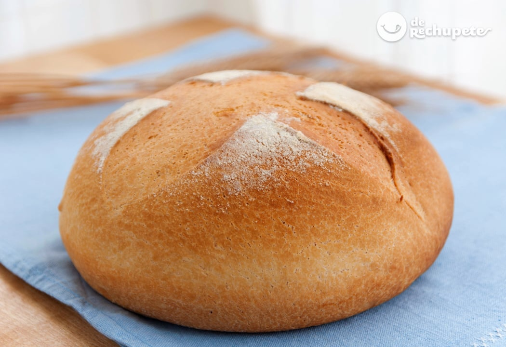

how to make bread
recetasderechupete.com

description
The bread recipe that I am presenting to you today is an example of how to get a very tasty homemade bread,
a miracle bread. It is perfect for getting started in this fantastic world of homemade bread and it will make us like this type of dough.
I would say that it is even easier than our homemade sliced bread or cornbread, with very light kneading and without complications.
Ingredients
- 310 g. W220 strength flour, 000 flour or wheat flour with 11.5 - 12.5% protein
- 175g. lukewarm water (not very hot)
- 20 g. mild extra virgin olive oil
- 15 g. fresh baker's yeast or 5.5 g. baker's dry yeast
- 8 g. of salt
steps to follow
- In a bowl, add the flour and make a hole in the center. Add half of the water, salt and extra virgin olive oil. With a wooden spoon we begin to integrate the ingredients. Dilute the baker's yeast in the rest of the water and add to the future dough. It is advisable not to mix salt and yeast at the same time.
- Salt can seriously disturb the action of the yeast during the fermentation process. The desirable level of salt in bread doughs ranges from 1.75% to 2.25%. In this case we have opted for 8 grams so that it does not affect the rising process and in turn adds the necessary flavor.
- We begin to knead the ingredients in the same bowl until we form a ball. Transfer the dough to a work surface and continue kneading. We will work the dough for about 10 or 12 minutes.
- We choose the container that we will take to the oven and sprinkle it with flour. Place the ball of dough and paint it with a little extra virgin olive oil. With a sharp knife we make some cuts on the surface of our dough and sprinkle it with flour. This bread will not rest in the style of other breads, because it will rise in the oven. I explain it below.
- We turn on the oven at 220º C with heat up and down. That is, we preheat the oven.
- You will see that it is very easy. We are going to bake 40 minutes inside the Pyrex or oven-safe bowl and another 25 minutes outside of it (to brown the bread and make it look nice). I'll tell you below.
- We leave the bread dough that we have in the Pyrex or oven-safe bowl (covered with aluminum foil, you can see the step-by-step photos) in the central tray for about 40 minutes. This is where our future bread will grow, it would be like the rest that it has not had out of the oven.
- After these 40 minutes we remove the aluminum foil cover from the bread dough and put it back in the oven for another 25 minutes. When removing the paper we will see that the dough has grown but that it is still uncooked. After 25 minutes we will have the cooked and light bread roll.Remove it from the oven and let it cool before enjoying it. If you are enthusiastic about the world of panarra but you don't dare because it seems very difficult, you can start with this recipe.
- Remove it from the oven and let it cool before enjoying it. If you are enthusiastic about the world of panarra but you don't dare because it seems very difficult, you can start with this recipe.
other recipes
how to make a mixed sandwich
how to make waffles